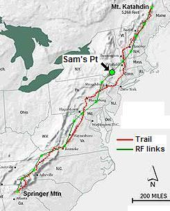
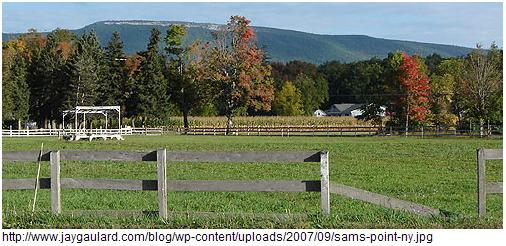
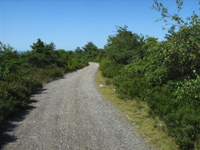
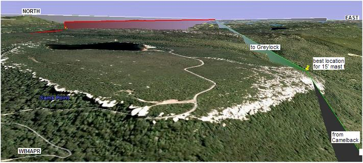
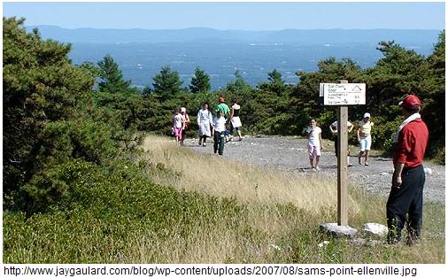
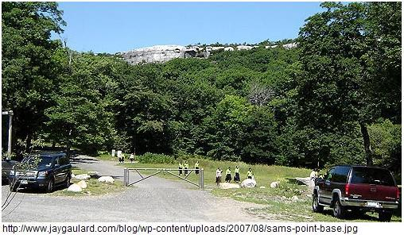
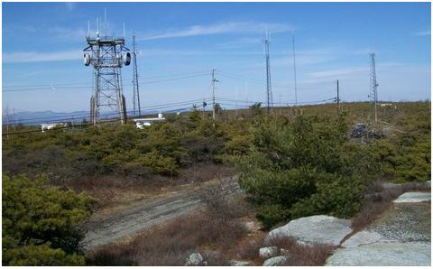

2014 SUCCESS! Dwight & Scott, N2FMC & KA2WQZ report that they set up SAMSPT-10 at about 11:15. We had set up the correct parameters in the radio on Friday night with John Huggins help AND I HAD POWER CYCLED the radio so I knew it wouldn't change when I transported it to Sam's Point on Sunday. But, sure enough several parms did change so I quickly pounded on the PM buttons on the D700 display to find the right configuration for the AT-GP. As a result, we actually came on line at about 11:30. Maybe about 20 minutes later I heard on the UHF simplex freq that a Golden Packet was sent and ack'd up and back along the AT. We were able to clearly hear 4 other AT-GP stations on simplex (packet or UHF voice?). I will guess that it was 2 to our North and 2 to our South.
We had SO many hikers passing through and stopping to ask what we were doing, I just could not find time to do any logging of packets seen as they went by. My guess is that there were 50-75 people that we spoke to at length. Maybe 100 that passed by and saw the setup. Tonight I will see if I can pull any useful station info out of the D700. Our equipment consisted of the following:
Next year we will consider a public relations table with handouts of maps and descriptions etc. Maybe 'eye ball' mini QSL cards with ATGP specific & general amateur radio info. Anyone want to build a .PDF that we can use as a template for this so we all have similar info?
2013 Planning: Peter Head, KC2ASA is a first timer leading the effort this year with the help of Dwight, N2FMC who has driving access to the top! See the summary spread sheet.
2012 Planning: Roger, NJ2R and Jeff, W2UA attempted a better RF location on Sam's point this year away from all the QRM though it will be without shade, in the briars with the bears and parking can be a big issue. Hopefully he was able to hear better this year on Saturday 21 July..
2011 Success: Roger Shultz NJ2R from NJ volunteered to drive up from PA over 100 miles away, but he had no packet gear of his own! Bob mailed him his TH-D72 HT and a twin-lead dual band "J pole". It worked! Roger had a lot of local QRM up on Sam's point, but his packets were getting through. He had little to no success with 445.925 however. See his 2011 report.
2010 was not manned. Neither was 2009. Fortunately it is slightly possible to communicate between Camelback and Greylock directly with beams, but signals are weak most of the time....
Sam's point state park is about 50 miles north of New York City.
See the Golden Packet plan. . This is one of the 15 hill-top sites from Georgia to Maine we hope to visit this summer on 26 July for 6 hours to attempt to relay a text message using hand-held radios the 2000 mile length of the Appalachain trail. This is to be a no impact Leave-No-Trace type of event of a few individuals at each site. . . Other hikers equipped with APRS ham radios are welcome to participate after the initial long-haul tests. Other hikers will be invited to send their data after 3 PM.
 
Sam's Point is an outstanding APRS station location in New York that provides an excellent link northeast across southern New York to Mount Greylock and to the southwest to Camelback Mountain in Pennsylvania. The highest point on this rock is High Point, but it has lots of existing RF emitters making for poor weak signal operations. The tourist site is Sam's point. It has tourist access as a state park but no operational parking without special access, though hiking in will work fine. Glen reports: There are two roads that go to the top of the ridge. One is called Free Tower Road and that is the road that the 2 way techs use. The other is Sam's Point Road. This you drive up to a parking lot, pay a parking fee, then you walk up to the top. It is about 3/4 of a mile walk and it is uphill along a road.

CALLSIGN: . . . . . . . . . . . . . SAMSPT-10
ALTITUDE: . . . . . . . . . . . . . 2240 feet
POSITION:. . . . . . . . . . . . . . 4142.3N and 7420.5W
LINK NORTHEAST: . . . . . Mount Greylock, Mass
See the
RF details
by KX4O
LINK SOUTHWEST: . . . . . Camelback Mtn, PA
See the
RF details
by KX4O
LINK NEARBY: . . . . . . . . . Highpoint, NJ, a possible bypass
REPEATER: . . . . . . . . . . . . N2LEN - 442.050 - PL 114.8
IGATE POSSIBLE: . . . . . . WB2LMV
ECHOLINK POSSIBLE: . . WB2LMV
TEAM MEMBERS: . . . . . . NJ2R, Roger Schultz for 2011 driving up from NJ
. . . . . . . . . . . . . . . . . . . . . . . . N2LEN*aol.com, (not available) Mike? , Steve? (maybe in 2009)
. . . . . . . . . . . . . . . . . . . . . . . . Glen, WB2LMV*aol.com, Len Signoretti (maybe in 2009)
COMMENTS: .
Glen, WB2LMV Reports 14 July 2009:
Everyone that I tried to interest in this event has said that they are unable to make it.
I had hoped for a ride up to Sam's Point because I am unable to to walk up there due
to my disability.
John Huggins, KX4O's RF link analysis above shows that Sams point will need a good station for both of its links. And the location will need to be on the edge shown below which is the only point that can see both directinos without needing a very tall mast. The station will have to be hiked in and should use a good GAIN vertical antenna with probably 5 dBi gain or so.

Glen wb2lmv*aol.com reports in 2009: Sam's Point (High Point) is a good place, because of it's altitude and high winds the only trees that grow up there are scrub pines and they are only a few feet high. Access to it is available by driving up to Cragsmoor and then over to Sam's Point. At Sam's Point you may park then hike up the rest of the way to high point. You will notice a road on the map called Free Tower Road.
That is an access road available to the commercial 2 way techs that service the many repeaters up there. All others must hike up there and it is a 3/4 mile steep climb to Sam's point, but you do walk along a road. Past Sam's point, if you like, you can continue walking past the many towers (20 maybe) and to the actual High Point. After the towers the service road becomes a clear path to walk on.

I have been up there many times before I became disabled due to a back injury. I am no longer able to hike. Looking at the map you will see that the village of Ellenville appears to be on top of the ridge. That is incorrect. Ellenville lies below in the valley where Route 52 intersects Route 209. Ellenville previously owned the land on top of the ridge, but it has since been sold to the State of New York. Since it is now State land all are welcome to hike the ridge.
The NE and SW directions are clear from High Point, N and NW are somewhat blocked by the Catskills. There is no real reason to go all the way to high point, since operation at Sam's point should still see NE and SW just fine. Prepare for winds.
The photo below is the parking lot for Sam's Point hike. It's about a 3/4 mile uphill walk.. Though vehicle access is possible for someone with key access.

Glen, wb2lmv*aol.com also reports that he has a very straight shot right up the valley towards Greylock. There is nothing higher than this hill from his QTH going in that direction for some 45 miles or so. And Greylock is approximately 90 miles from there as the crow flies. The antenna is about 35 feet above ground at the radials, but still below the tree tops, but he can work Greylock S3 - S6 depending on conditions.

The above Google Earth view shows the RF path from Camelback Mountain in Pennsylvania to Sam's Point. And from Sam's Point on to Mount Greylock. This is a more direct shot taking advantage of higher points, over lower land, and missing the Deleware Water Gap visible in the lower right of this image.

DETAIL LINK ANALYSIS BY KX4O: Be sure to follow the two RF links at the
top of this page to see the excellent and very detailed RF link analysis
performed for every link in this project by KX4O John Huggins.
Each RF link shows the terrain map
elevations, the AT trail in yellow, the RF path loss itself
including fresnel zones and finally a
statistical plot of the probabilities of link availability. We will very
much be looking at the results of this project compared to the pre-event
analysis and predictions. You can see all of his Link Analysis on his
AT Links Page.

The exact operating point will be chosen by the local team. EIther from the actual Sam's point tourist area (good PR potential) or from a little bit higher up where the other RF towers are (shown here). But the advantage of PR, and the disadvantage of desense near the towers should be considered.
Bob, WB4APR
See my other GENERAL page on APRS applications and Ideas on the AT
Return to the APRS HOMEPAGE or SiteMap.